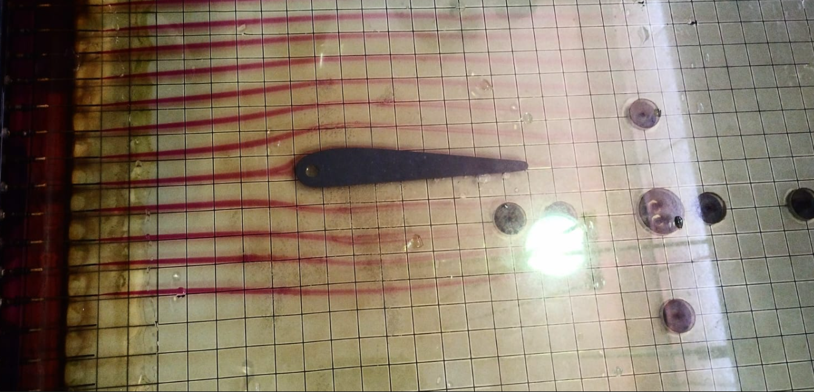

Elementos de Mecánica del Medio Continuo
Termofluidos
En la mecánica del medio continuo, las ecuaciones constitutivas desempeñan un papel fundamental, ya que permiten describir cómo responde un material ante la acción de fuerzas externas, estableciendo la relación entre los esfuerzos y las deformaciones o tasas de deformación. En el caso de los fluidos, estas ecuaciones son esenciales para predecir su comportamiento dinámico, modelar su movimiento y resolver las ecuacion es de conservación que gobiernan su flujo.
Entre los modelos constitutivos más básicos y ampliamente utilizados se encuentran los correspondientes a fluidos ideales y fluidos viscosos. Los primeros representan un caso límite en el cual se asume la ausencia total de viscosidad, de modo que no existen esfuerzos cortantes en el fluido durante su movimiento. Este modelo, aunque no describe a ningún fluido real, es fundamental en la formulación teórica de la dinámica de fluidos, ya que simplifica significativamente las ecuaciones de movimiento y permite comprender fenómenos como flujos inviscidos, circulación, irrotacionalidad y ondas.
Por otro lado, los fluidos viscosos incorporan los efectos reales de fricción interna, que se manifiestan cuando existen gradientes de velocidad dentro del fluido. El modelo constitutivo clásico para estos fluidos es el formulado por Newton, el cual establece que el esfuerzo cortante es proporcional a la tasa de deformación. Este comportamiento caracteriza a los llamados fluidos newtonianos —como el agua, el aire o el aceite— y constituye la base para la deducción de las ecuaciones de Navier–Stokes, piedra angular de la mecánica de fluidos.
El estudio conjunto de estos modelos, ideal y viscoso, permite comprender cómo las propiedades intrínsecas de los fluidos influyen en su movimiento y en la distribución de los esfuerzos internos, proporcionando herramientas teóricas indispensables para resolver problemas de ingeniería, física aplicada y ciencias naturales.
Las ecuaciones constitutivas describen cómo reacciona un material ante las cargas externas. Son necesarias porque las ecuaciones de conservación contienen más incógnitas que ecuaciones, y por lo tanto requieren relaciones adicionales para cerrarse.
Postula que, una vez conocido el sistema de fuerzas que actúan sobre un punto material y su posición y velocidad en un instante dado, el movimiento del punto está perfectamente determinado en todos los instantes posteriores. Este principio es una consecuencia matemática de la ley de Newton y se aplica a la mecánica clásica
Postula que el esfuerzo en un punto depende exclusivamente del estado de deformación o de su tasa en ese mismo punto, sin influencia directa de regiones alejadas.
Son aquellas en las que la relación entre esfuerzos y deformaciones es proporcional.
Ejemplos:
| Material | Ecuación constitutiva | Descripción | Sólido Elástico lineal | $$ \ σ_{ij} = C_{ijklε_{kl}}$$ | Ley de Hooke Generalizada | Fluido Viscoso Newtoniano | $$ \ τ_{ij}=2μD_{ij} $$ | Esfuerzos cortantes proporcionales a la tasa de deformación |
|---|
Un fluido se caracteriza por:
1) Viscosidad nula (𝜇=0)
2) Ausencia de esfuerzos cortantes
3) No hay disipación de energía
4) Solo actúa la presión
Esto permite simplificar significativamente las ecuaciones de conservación.
Al eliminar la viscosidad de las ecuaciones de movimiento se obtiene:
| Variable | Descripción |
|---|---|
$$ \ ρ$$ | Densidad |
$$ \ v$$ | Velocidad |
$$ \ f $$⋅ | Fuerzas de cuerpo |
$$ \frac{\partial }{\partial t}$$⋅ | Derivada parcial respecto al tiempo |
$$\ p$$ | Presión |
Se refiere a un tipo de flujo en el que las partículas de fluido no tienen rotación alrededor de sus propios ejes, lo que resulta en una vorticidad nula.
El flujo irrotacional se caracteriza porque un elemento de fluido en cada punto del espacio no presenta velocidad angular respecto a ese punto. Esto significa que, a lo largo de las trayectorias del flujo, las partículas de fluido se mueven sin girar sobre sí mismas.
Un flujo es irrotacional si:
Entonces existe un potencial de velocidad
En un flujo irrotacional, la vorticidad es cero, lo que implica que el rotacional del campo de velocidad también es cero. Esta condición es fundamental para definir el flujo irrotacional y se utiliza en diversas aplicaciones de la mecánica de fluidos, como en la formulación de ecuaciones que describen el comportamiento de fluidos ideales.
Para un fluido ideal, incompresible y estacionario:
Interpretación energética:
| Término | Tipo de energía |
|---|---|
$$ \ \frac{1}{2} \rho v^2 p$$ | Cinética |
$$ \ v$$ | Velocidad |
$$ \ \rho g z $$⋅ | Potencial gravitacional |
Un fluido viscoso incompresible es aquel que, aunque presenta viscosidad, su densidad permanece constante a lo largo del tiempo y del espacio, independientemente de las fuerzas externas o de los cambios de presión. Esto significa que el volumen del fluido no varía con la presión
Los fluidos viscosos generan esfuerzos cortantes proporcionales a la tasa de deformación. Para un fluido newtoniano:
donde $$\ D_{ij} $$ es el tensor de tasas de deformación
Las ecuaciones de Navier-Stokes expresan matemáticamente la conservación del momento y la conservación de la masa para fluidos newtonianos. Se derivan de la aplicación de la segunda ley de Newton al movimiento de fluidos, considerando que la tensión en el fluido es la suma de un término viscoso (proporcional al gradiente de velocidad) y un término de presión. Esto permite describir el flujo viscoso de manera precisa.
Con la condición de incompresibilidad:

Este tipo de flujo se caracteriza por trayectorias suaves y ordenadas, lo que reduce la turbulencia y la mezcla de partículas.
| Variable | Descripción |
|---|---|
$$ \ ρ$$ | Densidad del material (masa por unidad de volumen) |
$$ \ \frac{De}{Dt} $$ | Derivada material de la energía interna |
$$ \ \boldsymbol{\sigma} : \nabla \vec{v}$$ | Trabajo de esfuerzos internos por deformación |
$$ \ \vec{q} $$⋅ | Flujo de calor por conducción |
$$ \vec{b}$$ | Derivada parcial respecto al tiempo |
$$ \ r$$ | Fuente térmica por unidad de masa (generación interna de calor) |
$$ \ \nabla \cdot$$ | Divergencia |
$$ \ \nabla \vec{v} $$ | Gradiente del vector velocidad |
| Variable | Descripción |
|---|---|
$$ \ ρ$$ | Densidad del material (masa por unidad de volumen) |
$$ \ \frac{D\vec{v}}{Dt} $$ | Tiempo |
$$ \nabla \cdot$$ | Vector de velocidad del material. |
$$ \rho $$⋅ | Divergencia (medida de flujo neto que sale de un volumen diferencial) |
$$ \vec{b}$$ | Derivada parcial respecto al tiempo |
La manufactura aditiva abarca una amplia gama de materiales según el proceso:
| Tipo de material | Ejemplos |
|---|---|
| Polímeros | PLA, ABS, PETG, nylon, TPU. |
| Metales | Acero inoxidable, titanio, inconel, aluminio. |
| Cerámicos | Zirconia, alúmina. |
| compuestos | Filamentos reforzados con fibra de carbono o vidrio. |
Como vimos anteriormente, existen actualmente una multitud de tecnologías de fabricación aditiva, las cuales tienen muchas ventajas, lo que abre una ventana de oportunidades para la ingeniería.:
Por el momento las cosas no son tan ideales como aparentan, puesto que los procesos de manufactura aditiva tambien tienen una serie de limitaciones las cuales deben ser consideradas, si se elige alguno de estos métodos.
| Ventajas | Limitaciones |
|---|---|
| Geometrías complejas sin costo adicional | Velocidad de fabricación relativamente baja |
| Personalización total | Limitación en materiales disponibles |
| Reducción de desperdicio | Acabados superficiales requieren post-proceso |
| Prototipado rápido | Costos altos en impresoras industriales |
EJERCICIO Fluye un fluido con las siguientes características:
flujo estacionario
flujo desarrollado
tuberia circular
$$\ \rho = 1000 \frac{kg}{m^3} $$
$$\mu = 1.0 × 10^-3 Pa⋅s $$
$$\ r = 10 mm $$
$$\ L = 1.0 m$$
$$\ \nabla p = p_{entrada} - p_{salida} = 600 Pa$$
Selecciona la respuesta correcta: